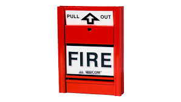
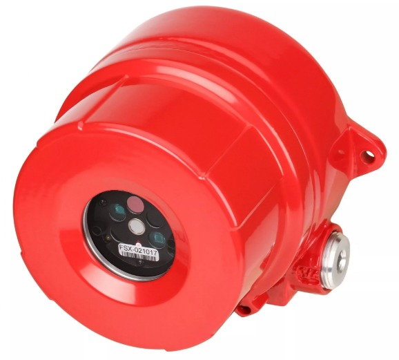

Manuales
Estacion manual de accion sencilla
La estación manual de acción sencilla está diseñada para ser activada directamente por una persona. Normalmente, se activa tirando de una palanca o pulsando un botón.
Estacion manual de doble accion
Para activar la alarma, el usuario debe realizar dos acciones distintas. Generalmente, esto implica primero levantar una cubierta protectora o presionar un botón de liberación, y luego presionar otro botón o palanca para activar la alarma.
.jpeg)
Automatico
Detector de humo
Los detectores de humo están diseñados para identificar partículas de humo en el aire. La presencia de humo suele indicar la existencia de un incendio o un fuego en sus primeras etapas.

Detector de calor
Estos detectores activan la alarma cuando la temperatura alcanza un nivel específico que ha sido preestablecido. Por ejemplo, un detector puede estar configurado para activar la alarma si la temperatura supera los 58°C (136°F).

Detector de CO2
El detector mide la concentración de dióxido de carbono en el aire, generalmente en partes por millón (ppm). El CO2 es un gas incoloro y sin olor que puede acumularse en espacios cerrados y puede ser un indicio de mala ventilación o de problemas con los sistemas de combustión.

Detector de flama
Los detectores de flama detectan la radiación emitida por las llamas en el espectro de luz visible, infrarrojo o ultravioleta. Esta radiación es característica de las llamas y no está presente en la mayoría de las otras fuentes de calor.
Detector de gas
Detectan gases inflamables como metano (CH4), propano (C3H8), butano (C4H10), y otros hidrocarburos. Utilizan sensores que reaccionan con el gas para medir su concentración.